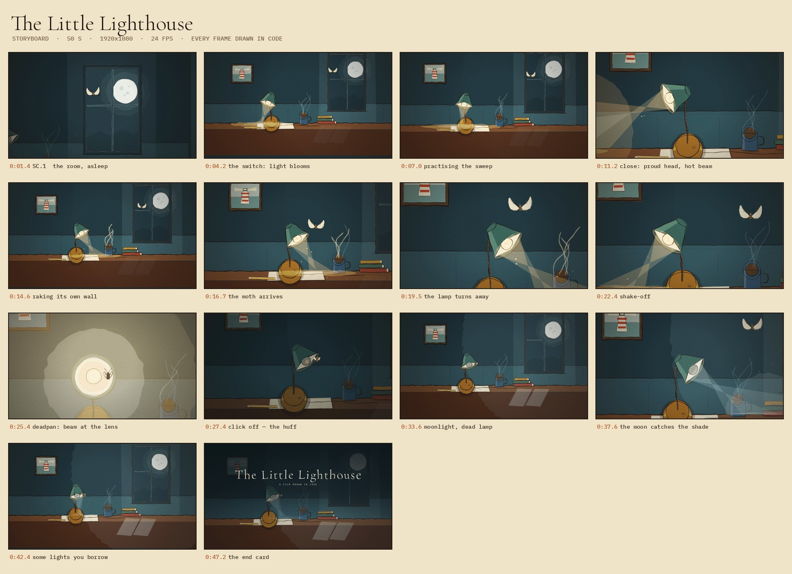

The Little Lighthouse
A desk lamp practises being a lighthouse. A moth has opinions. The moon has been watching the whole time.
Drawn, not generated
Every frame is canvas-2D ink on paper grain. No footage, no AI images, no 3D.
Cel boil
Line and fill are re-inked each frame from three stored drawings, the way a hand-inked cel breathes.
Music
“Bright Bouncy Acoustic” by Music for Creators — CC BY 4.0, cut on the bar line.
It is a small film about a small light. The lamp has no face: it acts with its posture, the angle of its shade and the shape of the beam, the way a good lamp does. It practises its sweep at night, gets heckled by a moth, switches itself off in a huff — and then notices that the room was never dark to begin with.
Everything you see is drawn by src/scene.js: the room, the brass, the window, the moon, the moth, the dust and the light. The film is 1,200 frames, each one a pure function of time, so any frame can be re-rendered exactly — the title card included.
Storyboard

